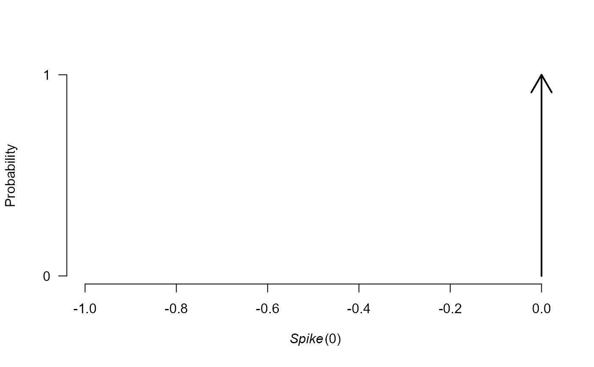
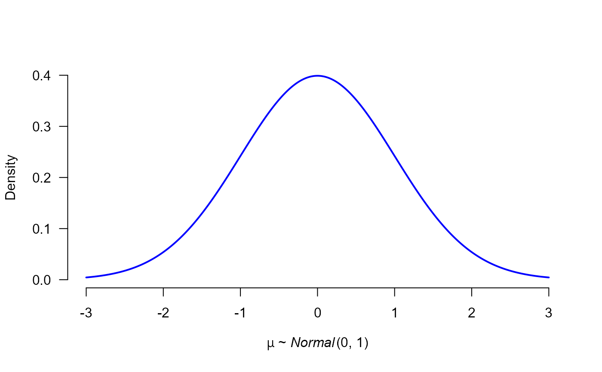
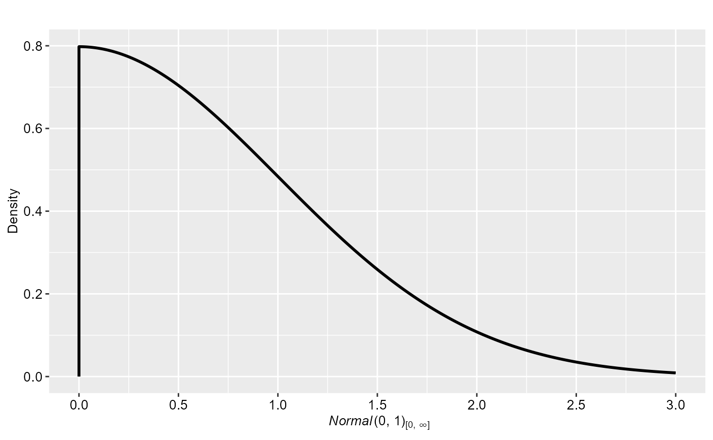
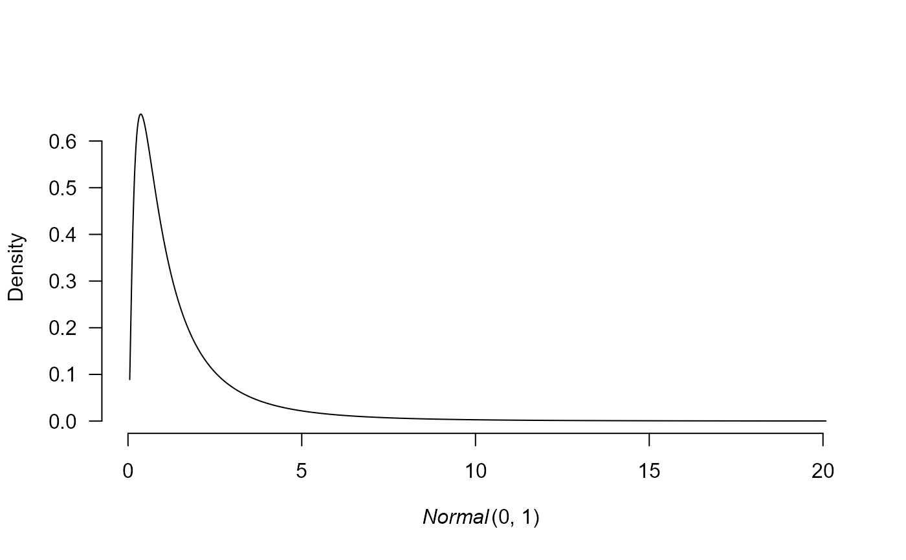

Plots a prior object
# S3 method for prior
plot(
x,
plot_type = "base",
x_seq = NULL,
xlim = NULL,
x_range_quant = NULL,
n_points = 1000,
n_samples = 10000,
force_samples = FALSE,
transformation = NULL,
transformation_arguments = NULL,
transformation_settings = FALSE,
show_figures = if (individual) -1 else NULL,
individual = FALSE,
rescale_x = FALSE,
par_name = NULL,
...
)a prior
whether to use a base plot "base"
or ggplot2 "ggplot" for plotting.
sequence of x coordinates
x plotting range
quantile used for
automatically obtaining x_range
if both x_range and x_seq
are unspecified. Defaults to 0.005
for all but Cauchy, Student-t, Gamma, and
Inverse-gamme distributions that use
0.010.
number of equally spaced points
in the x_range if x_seq is unspecified
number of samples from the prior
distribution if the density cannot be obtained
analytically (or if samples are forced with
force_samples = TRUE)
should prior be sampled instead of obtaining analytic solution whenever possible
transformation to be applied to the prior distribution. Either a character specifying one of the prepared transformations:
linear transformation in form of a + b*x
also known as Fisher's z transformation
exponential transformation
, or a list containing the transformation function fun,
inverse transformation function inv, and the Jacobian of
the transformation jac. See examples for details.
a list with named arguments for
the transformation
boolean indicating whether the
settings the x_seq or x_range was specified on
the transformed support
which figures should be returned in case of
multiple plots are generated. Useful when priors for the omega
parameter are plotted and individual = TRUE.
should individual densities be returned (e.g., in case of weightfunction)
allows to rescale x-axis in case a weightfunction is plotted.
a type of parameter for which the prior is specified. Only relevant if the prior corresponds to a mu parameter that needs to be transformed.
additional arguments
plot.prior returns either NULL or
an object of class 'ggplot' if plot_type is plot_type = "ggplot".
# create some prior distributions
p0 <- prior(distribution = "point", parameters = list(location = 0))
p1 <- prior(distribution = "normal", parameters = list(mean = 0, sd = 1))
p2 <- prior(distribution = "normal", parameters = list(mean = 0, sd = 1), truncation = list(0, Inf))
# a default plot
plot(p0)

# manipulate line thickness and color, change the parameter name
plot(p1, lwd = 2, col = "blue", par_name = bquote(mu))

# use ggplot
plot(p2, plot_type = "ggplot")

# utilize the ggplot prior geom
plot(p2, plot_type = "ggplot", xlim = c(-2, 2)) + geom_prior(p1, col = "red", lty = 2)
# apply transformation
plot(p1, transformation = "exp")
